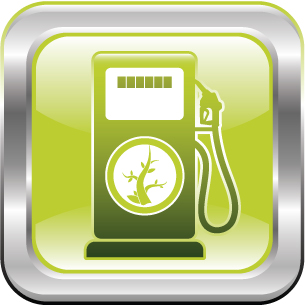

© designalldone/shutterstock
In Module 2 you will keep investigating energy changes in chemical reactions by focusing on changes that occur at the molecular level.
You will continue the ecotour planning you began in Module 1 by considering using biodiesel in vehicles required by your ecotour. Biodiesel is an alternative fuel that can be produced from waste cooking or other oils. You will consider the production and use of biodiesel from a variety of perspectives.
In Module 2 you will investigate the following question:
You will also continue to address the Module 1 questions:
Remember that each lesson will also be organized around questions intended to guide your study. As you proceed through Module 2, you may record answers to these questions and any interrelationships that exist between them in a concept map or graphic organizer. More information is available in the Unit A Concept Organizer. In the Module 1 Summary you will receive further information on how you can use your concept map or graphic organizer to review the concepts you studied in this module.